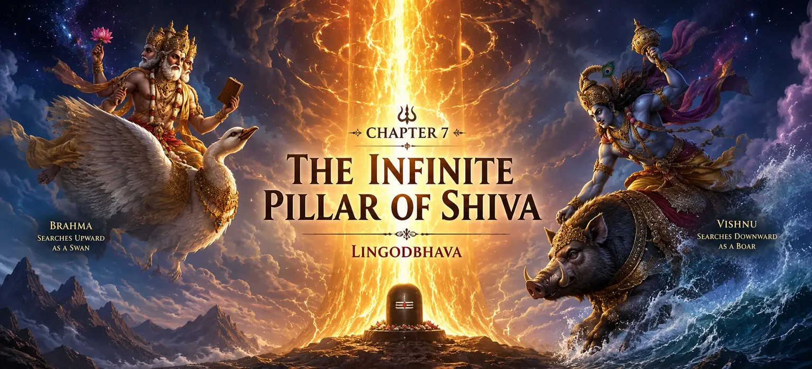

📖 Read the Sacred Shiva Purana Online • Har Har Mahadev 🔱
📖 পবিত্র শিব পুরাণ পাঠ করুন • হর হর মহাদেব 🔱
📖 पवित्र शिव पुराण ऑनलाइन पढ़ें • हर हर महादेव 🔱

Chapter 7 → The Infinite Pillar of Shiva
অধ্যায় ৭ → শিবের অনন্ত জ্যোতিস্তম্ভ
अध्याय 7 → शिव का अनंत स्तंभ
After describing the means to attain liberation, Suta Maharshi narrates a profound event that reveals the supreme nature of Lord Shiva. At a time when Brahma and Vishnu were engaged in a dispute regarding their greatness, a mysterious and infinite pillar of blazing light suddenly appeared before them.
Neither Brahma nor Vishnu could understand the origin of this divine phenomenon. Determined to discover its beginning and end, they undertook a great search. This extraordinary event became one of the most important revelations in the Shiva Purana, demonstrating that Lord Shiva transcends all limitations and exists beyond creation, preservation and destruction.
This chapter is traditionally known as the appearance of the Infinite Pillar of Light, or Lingodbhava, and teaches the eternal supremacy of Mahadev.
মোক্ষলাভের উপায় ব্যাখ্যা করার পর সূত মহর্ষি এমন এক মহৎ ঘটনার বর্ণনা করেন যা ভগবান শিবের পরম স্বরূপ প্রকাশ করে। এক সময় ব্রহ্মা ও বিষ্ণুর মধ্যে নিজেদের শ্রেষ্ঠত্ব নিয়ে বিরোধ সৃষ্টি হয়। ঠিক সেই সময় তাদের সামনে এক রহস্যময় ও অসীম জ্যোতির স্তম্ভ আবির্ভূত হয়।
ব্রহ্মা ও বিষ্ণু কেউই এই দিব্য আলোর উৎস বা সীমা বুঝতে পারেননি। এর আদি ও অন্ত খুঁজে বের করার জন্য তারা এক মহান অনুসন্ধানে বের হন। এই অসাধারণ ঘটনাই শিব পুরাণের অন্যতম গুরুত্বপূর্ণ প্রকাশ, যা দেখায় যে ভগবান শিব সমস্ত সীমাবদ্ধতার ঊর্ধ্বে এবং সৃষ্টি, পালন ও সংহারের অতীত।
এই অধ্যায়টি লিঙ্গোদ্ভব বা অনন্ত জ্যোতির স্তম্ভের আবির্ভাব নামে পরিচিত এবং মহাদেবের চিরন্তন শ্রেষ্ঠত্ব শিক্ষা দেয়।
मुक्ति प्राप्त करने के साधनों का वर्णन करने के बाद, सूत महर्षि एक गहन घटना का वर्णन करते हैं जो भगवान शिव की सर्वोच्च प्रकृति को प्रकट करती है। जिस समय ब्रह्मा और विष्णु अपनी महानता को लेकर विवाद में उलझे हुए थे, अचानक उनके सामने चमकती रोशनी का एक रहस्यमय और अनंत स्तंभ प्रकट हो गया।
न तो ब्रह्मा और न ही विष्णु इस दिव्य घटना की उत्पत्ति को समझ सके। इसकी शुरुआत और अंत की खोज करने के लिए दृढ़ संकल्पित होकर, उन्होंने एक महान खोज की। यह असाधारण घटना शिव पुराण में सबसे महत्वपूर्ण रहस्योद्घाटन में से एक बन गई, जिससे पता चलता है कि भगवान शिव सभी सीमाओं से परे हैं और सृजन, संरक्षण और विनाश से परे मौजूद हैं।
यह अध्याय पारंपरिक रूप से प्रकाश के अनंत स्तंभ या लिंगोद्भव की उपस्थिति के रूप में जाना जाता है, और महादेव की शाश्वत सर्वोच्चता सिखाता है।
The Dispute Between Brahma and Vishnu
ব্রহ্মা ও বিষ্ণুর মধ্যে বিরোধ
ब्रह्मा और विष्णु के बीच विवाद
In ancient times, Lord Brahma, the creator of the universe, and Lord Vishnu, its preserver, became involved in a dispute regarding their supremacy. Each believed that his role in maintaining the cosmic order was the most important.
Brahma declared that creation was the greatest power, for without creation nothing could exist. Vishnu replied that preservation was equally essential, because whatever was created would perish without protection and sustenance.
As the discussion intensified, pride began to cloud their wisdom. Neither deity was willing to accept the greatness of the other. What started as a debate gradually turned into a contest of superiority.
প্রাচীনকালে সৃষ্টিকর্তা ব্রহ্মা এবং পালনকর্তা বিষ্ণুর মধ্যে শ্রেষ্ঠত্ব নিয়ে বিরোধ সৃষ্টি হয়। উভয়েই মনে করতেন যে বিশ্বব্যবস্থা রক্ষায় তাঁদের ভূমিকাই সর্বাধিক গুরুত্বপূর্ণ।
ব্রহ্মা ঘোষণা করেন যে সৃষ্টি সর্বশ্রেষ্ঠ শক্তি, কারণ সৃষ্টি না হলে কিছুই অস্তিত্ব লাভ করতে পারত না। বিষ্ণু উত্তর দেন যে পালনও সমান গুরুত্বপূর্ণ, কারণ সংরক্ষণ ও রক্ষা না থাকলে সৃষ্ট সমস্ত কিছু ধ্বংস হয়ে যেত।
বিতর্ক যতই তীব্র হতে লাগল, অহংকার তাদের জ্ঞানকে আচ্ছন্ন করতে শুরু করল। কেউই অপরের মাহাত্ম্য স্বীকার করতে প্রস্তুত ছিলেন না। একটি সাধারণ আলোচনা ধীরে ধীরে শ্রেষ্ঠত্বের প্রতিযোগিতায় পরিণত হলো।
प्राचीन काल में, ब्रह्मांड के निर्माता भगवान ब्रह्मा और इसके संरक्षक भगवान विष्णु, अपनी सर्वोच्चता को लेकर विवाद में उलझ गए। प्रत्येक का मानना था कि ब्रह्मांडीय व्यवस्था को बनाए रखने में उसकी भूमिका सबसे महत्वपूर्ण थी।
ब्रह्मा ने घोषणा की कि सृजन सबसे बड़ी शक्ति है, क्योंकि सृजन के बिना कुछ भी अस्तित्व में नहीं हो सकता। विष्णु ने उत्तर दिया कि संरक्षण भी उतना ही आवश्यक है, क्योंकि जो कुछ भी बनाया गया है वह संरक्षण और भरण-पोषण के बिना नष्ट हो जाएगा।
जैसे-जैसे चर्चा तेज़ हुई, अहंकार उनकी बुद्धि पर हावी होने लगा। कोई भी देवता दूसरे की महानता को स्वीकार करने को तैयार नहीं था। जो बहस से शुरू हुई वह धीरे-धीरे श्रेष्ठता की होड़ में बदल गई।
The Appearance of the Endless Pillar of Light
অনন্ত জ্যোতির স্তম্ভের আবির্ভাব
प्रकाश के अनंत स्तंभ का प्रकट होना
As the disagreement between Brahma and Vishnu continued, a wondrous and terrifying phenomenon suddenly appeared before them. Between the two deities arose a colossal pillar of blazing light that stretched beyond the heavens and descended far below the worlds.
Its radiance was brighter than countless suns, yet its brilliance did not burn. The pillar had no visible beginning and no visible end. It seemed to pierce all realms of existence and stand beyond the limits of time and space.
Both Brahma and Vishnu were astonished. The divine column was unlike anything they had ever witnessed. Its infinite nature immediately silenced their argument and filled them with wonder.
Unable to comprehend its origin, they realized that this mysterious manifestation possessed a power far greater than their own. Determined to uncover its secret, they decided to search for its beginning and end.
ব্রহ্মা ও বিষ্ণুর বিরোধ যখন চলছিল, তখন হঠাৎ তাঁদের সামনে এক বিস্ময়কর ও ভয়ংকর দৃশ্য প্রকাশ পেল। দুই দেবতার মাঝখানে এক বিশাল জ্যোতির স্তম্ভ আবির্ভূত হলো, যা স্বর্গলোকেরও ঊর্ধ্বে উঠে গিয়েছিল এবং নিচে অসীম গভীরে নেমে গিয়েছিল।
তার দীপ্তি অসংখ্য সূর্যের আলোর থেকেও উজ্জ্বল ছিল, কিন্তু সেই আলো দহন করত না। স্তম্ভটির কোনো আদি বা অন্ত দৃশ্যমান ছিল না। মনে হচ্ছিল এটি সমস্ত লোক ও জগতকে ভেদ করে সময় ও স্থানের সীমার বাইরে অবস্থান করছে।
ব্রহ্মা ও বিষ্ণু বিস্ময়ে অভিভূত হয়ে গেলেন। এমন দিব্য জ্যোতিরূপ তাঁরা আগে কখনও দেখেননি। তার অসীমতা তাঁদের সমস্ত বিতর্ক মুহূর্তের মধ্যে স্তব্ধ করে দিল।
এর উৎস বুঝতে না পেরে তাঁরা উপলব্ধি করলেন যে এই রহস্যময় প্রকাশ তাঁদের শক্তির থেকেও অসীমভাবে মহান। তাই তাঁরা এর আদি ও অন্ত অনুসন্ধান করার সিদ্ধান্ত নিলেন।
जैसे ही ब्रह्मा और विष्णु के बीच मतभेद जारी रहा, अचानक उनके सामने एक अद्भुत और भयानक घटना प्रकट हुई। दोनों देवताओं के बीच चमकती रोशनी का एक विशाल स्तंभ उभरा जो स्वर्ग से परे और दुनिया के बहुत नीचे तक फैला हुआ था।
उसकी चमक असंख्य सूर्यों से भी अधिक तेज थी, फिर भी उसका तेज जला नहीं। खम्भे का न तो कोई आरंभ दिखाई देता था और न ही कोई अंत दिखाई देता था। ऐसा लग रहा था कि यह अस्तित्व के सभी क्षेत्रों को भेद रहा है और समय और स्थान की सीमाओं से परे खड़ा है।
ब्रह्मा और विष्णु दोनों आश्चर्यचकित थे। दिव्य स्तम्भ उनके द्वारा देखी गई किसी भी चीज़ से भिन्न था। इसकी अनंत प्रकृति ने तुरंत उनके तर्क को शांत कर दिया और उन्हें आश्चर्य से भर दिया।
इसकी उत्पत्ति को समझने में असमर्थ होने पर, उन्हें एहसास हुआ कि इस रहस्यमय अभिव्यक्ति के पास उनसे कहीं अधिक बड़ी शक्ति है। इसके रहस्य को उजागर करने के लिए दृढ़ संकल्पित होकर, उन्होंने इसकी शुरुआत और अंत की खोज करने का फैसला किया।
Brahma Ascends in Search of the Summit
শিখরের সন্ধানে ব্রহ্মার ঊর্ধ্বগমন
ब्रह्मा शिखर की खोज में चढ़े
After agreeing to search for the limits of the radiant pillar, Brahma and Vishnu chose different directions. Brahma decided to seek the summit of the blazing column while Vishnu resolved to discover its foundation.
Assuming the form of a magnificent swan, Brahma soared upward with tremendous speed. Higher and higher he flew through the celestial realms, crossing countless regions of the universe. Yet no matter how far he traveled, the pillar continued endlessly before him.
Ages seemed to pass as Brahma searched without success. The further he journeyed, the more he realized that the column of light possessed no visible limit. Its height was immeasurable and its glory beyond comprehension.
Gradually, Brahma's confidence began to fade. The task that had appeared simple now seemed impossible. Nevertheless, he continued his ascent, determined to uncover the mystery of the infinite pillar.
জ্যোতির স্তম্ভের সীমা অনুসন্ধান করার সিদ্ধান্ত নেওয়ার পর ব্রহ্মা ও বিষ্ণু ভিন্ন ভিন্ন দিক বেছে নিলেন। ব্রহ্মা স্তম্ভটির শিখর খুঁজতে রওনা হলেন এবং বিষ্ণু এর ভিত্তি অনুসন্ধান করার সংকল্প করলেন।
ব্রহ্মা এক মহিমান্বিত হংসের রূপ ধারণ করে অসীম গতিতে ঊর্ধ্বে উড়তে শুরু করলেন। তিনি স্বর্গীয় লোক অতিক্রম করে বিশ্বব্রহ্মাণ্ডের অসংখ্য স্তর পার হয়ে এগিয়ে যেতে লাগলেন। কিন্তু যত দূরই তিনি অগ্রসর হলেন, জ্যোতির স্তম্ভ ততই অনন্তভাবে সামনে বিস্তৃত হতে থাকল।
অগণিত সময় অতিবাহিত হয়েছে বলে মনে হলেও তাঁর অনুসন্ধানের কোনো ফল মিলল না। তিনি উপলব্ধি করতে শুরু করলেন যে এই জ্যোতির স্তম্ভের কোনো দৃশ্যমান সীমা নেই। এর উচ্চতা অপরিমেয় এবং এর মাহাত্ম্য মানববোধের অতীত।
ধীরে ধীরে ব্রহ্মার আত্মবিশ্বাস ক্ষীণ হতে লাগল। যে কাজ প্রথমে সহজ বলে মনে হয়েছিল, তা এখন অসম্ভব বলে প্রতীয়মান হলো। তবুও তিনি অনন্ত স্তম্ভের রহস্য উদ্ঘাটনের আশায় তাঁর যাত্রা অব্যাহত রাখলেন।
दीप्तिमान स्तंभ की सीमा की खोज करने के लिए सहमत होने के बाद, ब्रह्मा और विष्णु ने अलग-अलग दिशाएँ चुनीं। ब्रह्मा ने धधकते स्तंभ के शिखर की खोज करने का निर्णय लिया, जबकि विष्णु ने इसकी नींव की खोज करने का संकल्प लिया।
एक शानदार हंस का रूप धारण करके, ब्रह्मा जबरदस्त गति से ऊपर की ओर उड़ गए। ब्रह्माण्ड के अनगिनत क्षेत्रों को पार करते हुए, वह दिव्य लोकों से और ऊपर उड़ता रहा। फिर चाहे वह कितनी ही दूर क्यों न चला गया, खंभा उसके सामने अनवरत चलता रहा।
ब्रह्मा को बिना सफलता के खोज करते-करते कई युग बीतने लगे। जितना आगे उसने यात्रा की, उतना ही अधिक उसे एहसास हुआ कि प्रकाश के स्तंभ की कोई दृश्यमान सीमा नहीं है। उसकी ऊँचाई अपरिमेय और महिमा समझ से परे थी।
धीरे-धीरे ब्रह्मा का आत्मविश्वास ख़त्म होने लगा। जो कार्य सरल प्रतीत होता था वह अब असंभव लगने लगा। फिर भी, उन्होंने अनंत स्तंभ के रहस्य को उजागर करने के लिए दृढ़ संकल्प के साथ अपनी चढ़ाई जारी रखी।
Vishnu Descends to Find the Foundation
ভিত্তির সন্ধানে বিষ্ণুর অধোগমন
विष्णु आधार की खोज में उतरे
While Brahma journeyed upward in search of the summit, Lord Vishnu began his own quest to discover the foundation of the infinite pillar. To accomplish this task, he assumed the form of Varaha, the mighty divine boar, whose strength enabled him to travel through the deepest regions of existence.
With unwavering determination, Vishnu descended beneath the worlds, passing through hidden realms and vast cosmic depths. Yet wherever he traveled, the blazing column of light continued endlessly before him. There was no sign of a base, no indication of where the pillar began.
For a long time he searched with sincerity and perseverance. Eventually, Vishnu realized that the pillar was beyond measurement. Its foundation could not be reached because it belonged to a reality greater than the created universe itself.
Filled with humility, Vishnu accepted the truth. He understood that no power, however great, could comprehend the limitless nature of the divine manifestation standing before him.
যখন ব্রহ্মা শিখরের সন্ধানে ঊর্ধ্বগমন করছিলেন, তখন ভগবান বিষ্ণু অনন্ত জ্যোতির স্তম্ভের ভিত্তি অনুসন্ধান করতে শুরু করলেন। এই উদ্দেশ্যে তিনি বরাহরূপ ধারণ করলেন, কারণ সেই রূপে তিনি সৃষ্টির গভীরতম স্তর পর্যন্ত পৌঁছাতে সক্ষম ছিলেন।
অদম্য সংকল্প নিয়ে বিষ্ণু বিভিন্ন গুপ্তলোক ও অসীম গভীর অঞ্চলের মধ্য দিয়ে নিচের দিকে অগ্রসর হতে লাগলেন। কিন্তু তিনি যত দূরেই গেলেন না কেন, জ্যোতির স্তম্ভ ততই অনন্তভাবে বিস্তৃত হতে থাকল। কোথাও তার ভিত্তির কোনো চিহ্ন পাওয়া গেল না।
দীর্ঘকাল ধরে তিনি আন্তরিকতা ও অধ্যবসায়ের সঙ্গে অনুসন্ধান চালিয়ে গেলেন। অবশেষে বিষ্ণু উপলব্ধি করলেন যে এই স্তম্ভ কোনো সীমাবদ্ধ বস্তু নয়। এর ভিত্তি খুঁজে পাওয়া অসম্ভব, কারণ এটি সৃষ্ট জগতের অতীত এক পরম সত্যের প্রকাশ।
নম্রচিত্তে বিষ্ণু সত্যকে গ্রহণ করলেন। তিনি বুঝতে পারলেন যে যত মহান শক্তিই হোক না কেন, এই অসীম দিব্য প্রকাশের প্রকৃত সীমা উপলব্ধি করা সম্ভব নয়।
जबकि ब्रह्मा ने शिखर की खोज में ऊपर की ओर यात्रा की, भगवान विष्णु ने अनंत स्तंभ की नींव की खोज के लिए अपनी खोज शुरू की। इस कार्य को पूरा करने के लिए, उन्होंने शक्तिशाली दिव्य सूअर वराह का रूप धारण किया, जिसकी शक्ति ने उन्हें अस्तित्व के सबसे गहरे क्षेत्रों में यात्रा करने में सक्षम बनाया।
अटूट दृढ़ संकल्प के साथ, विष्णु गुप्त लोकों और विशाल ब्रह्मांडीय गहराइयों से गुजरते हुए, लोकों के नीचे उतरे। फिर भी वह जहां भी गए, प्रकाश का धधकता स्तंभ उनके सामने अनवरत रूप से चलता रहा। वहां न तो आधार का कोई चिन्ह था, न ही इस बात का कोई संकेत कि खम्भा कहां से शुरू हुआ।
लंबे समय तक उन्होंने ईमानदारी और लगन से खोज की। आख़िरकार, विष्णु को एहसास हुआ कि स्तंभ माप से परे था। इसकी नींव तक नहीं पहुंचा जा सका क्योंकि यह निर्मित ब्रह्मांड से भी बड़ी वास्तविकता से संबंधित था।
विष्णु ने विनम्रता से भरकर सत्य स्वीकार कर लिया। वह समझ गया कि कोई भी शक्ति, चाहे वह कितनी ही महान क्यों न हो, उसके सामने खड़ी दिव्य अभिव्यक्ति की असीमित प्रकृति को नहीं समझ सकती।
The Return of Brahma and Vishnu
ব্রহ্মা ও বিষ্ণুর প্রত্যাবর্তন
ब्रह्मा और विष्णु की वापसी
After their long and exhausting journeys, both Brahma and Vishnu returned to the place where the radiant pillar had first appeared. Neither had succeeded in discovering its limits. The endless column of light remained as mysterious and magnificent as before.
Lord Vishnu openly admitted his failure. With sincerity and humility, he declared that he had searched diligently for the foundation of the pillar but had been unable to find its end. He accepted that the divine manifestation was beyond his understanding and beyond the reach of his powers.
Brahma too had failed to discover the summit. Yet as he reflected upon his fruitless search, pride still lingered within his heart. Unwilling to accept defeat, he began to consider how he might preserve his claim to superiority.
Thus, while Vishnu returned with humility and truthfulness, Brahma struggled against the temptation of pride. The stage was set for a moment that would reveal the true character of both deities and the supreme wisdom of Lord Shiva.
দীর্ঘ ও কষ্টসাধ্য অনুসন্ধানের পর ব্রহ্মা ও বিষ্ণু উভয়েই সেই স্থানে ফিরে এলেন যেখানে প্রথম জ্যোতির স্তম্ভ আবির্ভূত হয়েছিল। কেউই তার সীমা খুঁজে পেতে সক্ষম হননি। অনন্ত আলোকস্তম্ভটি আগের মতোই রহস্যময় ও মহিমান্বিত রয়ে গেল।
ভগবান বিষ্ণু আন্তরিকভাবে নিজের ব্যর্থতা স্বীকার করলেন। বিনয় ও সততার সঙ্গে তিনি জানালেন যে স্তম্ভটির ভিত্তি খুঁজে পাওয়ার জন্য তিনি সর্বশক্তি প্রয়োগ করেছিলেন, কিন্তু তার অন্ত খুঁজে পাননি। তিনি উপলব্ধি করলেন যে এই দিব্য প্রকাশ তাঁর জ্ঞান ও শক্তির সীমার অতীত।
ব্রহ্মাও শিখর খুঁজে পেতে ব্যর্থ হয়েছিলেন। কিন্তু তাঁর অন্তরে এখনও অহংকারের কিছু অংশ অবশিষ্ট ছিল। পরাজয় স্বীকার করতে অনিচ্ছুক হয়ে তিনি ভাবতে লাগলেন কীভাবে নিজের শ্রেষ্ঠত্বের দাবি বজায় রাখা যায়।
এভাবে বিষ্ণু সত্য ও বিনয়ের সঙ্গে ফিরে এলেন, আর ব্রহ্মা অহংকারের প্রলোভনের সঙ্গে সংগ্রাম করতে লাগলেন। এখন এমন এক ঘটনার সূচনা হতে চলেছে যা দুই দেবতার প্রকৃত চরিত্র এবং ভগবান শিবের পরম জ্ঞানকে প্রকাশ করবে।
अपनी लंबी और थका देने वाली यात्रा के बाद, ब्रह्मा और विष्णु दोनों उस स्थान पर लौट आए जहां चमकदार स्तंभ पहली बार दिखाई दिया था। दोनों में से कोई भी अपनी सीमा जानने में सफल नहीं हुआ। प्रकाश का अनंत स्तंभ पहले की तरह ही रहस्यमय और भव्य बना रहा।
भगवान विष्णु ने खुले तौर पर अपनी विफलता स्वीकार की। ईमानदारी और विनम्रता के साथ, उन्होंने घोषणा की कि उन्होंने स्तंभ की नींव की पूरी लगन से खोज की थी, लेकिन इसका अंत नहीं ढूंढ पाए। उन्होंने स्वीकार किया कि दिव्य अभिव्यक्ति उनकी समझ से परे और उनकी शक्तियों की पहुंच से परे थी।
ब्रह्मा भी शिखर की खोज करने में असफल रहे थे। फिर भी जब उसने अपनी निरर्थक खोज पर विचार किया, तब भी उसके हृदय में गर्व बना रहा। हार स्वीकार करने की इच्छा न रखते हुए, उसने विचार करना शुरू कर दिया कि वह श्रेष्ठता के अपने दावे को कैसे बरकरार रख सकता है।
इस प्रकार, जबकि विष्णु विनम्रता और सच्चाई के साथ लौटे, ब्रह्मा ने अहंकार के प्रलोभन के खिलाफ संघर्ष किया। मंच एक ऐसे क्षण के लिए तैयार किया गया था जो दोनों देवताओं के वास्तविक चरित्र और भगवान शिव के सर्वोच्च ज्ञान को प्रकट करेगा।
Brahma's False Claim and the Ketaki Flower
ব্রহ্মার মিথ্যা দাবি ও কেতকী ফুল
ब्रह्मा का झूठा दावा और केतकी का फूल
During his journey through the limitless heights of the pillar, Brahma encountered a Ketaki flower drifting downward through the radiant light. Curious, he asked the flower where it had come from. The flower replied that it had been descending from above for an immeasurably long time.
At that moment, Brahma faced a difficult choice. He could return and honestly admit that he had failed to find the summit, or he could preserve his pride. Unfortunately, pride overcame wisdom. Brahma requested the Ketaki flower to serve as a witness and falsely declare that he had reached the top of the pillar.
The flower agreed to support his claim. When Brahma returned before Vishnu, he proudly announced that he had successfully discovered the summit of the infinite column. Presenting the Ketaki flower as proof, he claimed victory in their contest.
Vishnu listened respectfully, but the truth of the matter was known to the divine pillar itself. The moment had arrived for the Supreme Reality to reveal itself and expose the difference between truth and falsehood.
জ্যোতির স্তম্ভের অসীম উচ্চতায় ভ্রমণ করার সময় ব্রহ্মা একটি কেতকী ফুলকে নিচের দিকে ভেসে আসতে দেখলেন। তিনি ফুলটিকে জিজ্ঞাসা করলেন এটি কোথা থেকে এসেছে। কেতকী জানাল যে সে অসীম উচ্চতা থেকে দীর্ঘকাল ধরে নিচে নেমে আসছে।
সেই মুহূর্তে ব্রহ্মার সামনে একটি গুরুত্বপূর্ণ সিদ্ধান্ত উপস্থিত হলো। তিনি চাইলে সত্য স্বীকার করে বলতে পারতেন যে তিনি শিখর খুঁজে পাননি। কিন্তু দুর্ভাগ্যবশত অহংকার তাঁর প্রজ্ঞাকে আচ্ছন্ন করল। তিনি কেতকী ফুলকে অনুরোধ করলেন যেন সে সাক্ষ্য দেয় যে তিনি জ্যোতির স্তম্ভের শীর্ষে পৌঁছেছিলেন।
কেতকী ফুল তাঁর অনুরোধে সম্মত হলো। বিষ্ণুর সামনে ফিরে এসে ব্রহ্মা গর্বের সঙ্গে ঘোষণা করলেন যে তিনি অনন্ত স্তম্ভের শিখর আবিষ্কার করেছেন। প্রমাণ হিসেবে তিনি কেতকী ফুলকে উপস্থাপন করলেন এবং নিজের বিজয়ের দাবি করলেন।
বিষ্ণু সম্মানের সঙ্গে তাঁর কথা শুনলেন, কিন্তু প্রকৃত সত্য সেই দিব্য জ্যোতির স্তম্ভের অজানা ছিল না। সত্য ও মিথ্যার পার্থক্য প্রকাশ করার জন্য এখন পরম সত্যের আবির্ভাবের সময় উপস্থিত হয়েছে।
स्तंभ की असीमित ऊंचाइयों से अपनी यात्रा के दौरान, ब्रह्मा को उज्ज्वल प्रकाश के माध्यम से नीचे की ओर बहते हुए एक केतकी फूल का सामना करना पड़ा। उत्सुकतावश उसने फूल से पूछा कि यह कहाँ से आया है। फूल ने उत्तर दिया कि वह बहुत लंबे समय से ऊपर से नीचे उतर रहा है।
उस क्षण, ब्रह्मा को एक कठिन विकल्प का सामना करना पड़ा। वह वापस लौट सकता था और ईमानदारी से स्वीकार कर सकता था कि वह शिखर को खोजने में विफल रहा है, या वह अपने गौरव को सुरक्षित रख सकता है। दुर्भाग्य से, अहंकार ने बुद्धि पर विजय पा ली। ब्रह्मा ने केतकी के फूल से साक्षी बनने और झूठी घोषणा करने का अनुरोध किया कि वह स्तंभ के शीर्ष पर पहुंच गए हैं।
फूल उसके दावे का समर्थन करने के लिए सहमत हो गया। जब ब्रह्मा विष्णु के सामने लौटे, तो उन्होंने गर्व से घोषणा की कि उन्होंने अनंत स्तंभ के शिखर की सफलतापूर्वक खोज कर ली है। उन्होंने सबूत के तौर पर केतकी का फूल पेश करते हुए उनके मुकाबले में जीत का दावा किया.
विष्णु ने आदरपूर्वक सुना, लेकिन बात की सच्चाई तो दिव्य स्तंभ को ही पता थी। सर्वोच्च वास्तविकता को प्रकट करने और सत्य और झूठ के बीच अंतर को उजागर करने का समय आ गया था।
Shiva Reveals the Truth
শিব সত্য প্রকাশ করেন
शिव सत्य को प्रकट करते हैं
At the very moment Brahma presented his false claim, the infinite pillar of light suddenly split open. From within the blazing radiance emerged Lord Shiva in His supreme and majestic form. The brilliance of His presence illuminated all the worlds, and both Brahma and Vishnu stood in awe before Him.
Lord Shiva first turned to Vishnu. He praised Vishnu's honesty, humility and devotion to truth. Although Vishnu had failed to find the foundation of the pillar, he had openly admitted his inability and spoken only the truth. Shiva declared that truthfulness is greater than pride and blessed Vishnu for his sincerity.
Then Shiva addressed Brahma. The falsehood spoken by Brahma and supported by the Ketaki flower had been witnessed by the Supreme Lord Himself. Shiva revealed the entire truth before the universe and exposed the deception.
Thus, through the appearance of the Infinite Pillar of Light, Lord Shiva demonstrated that no one can conceal the truth from the Supreme Reality. The light that had seemed endless was none other than the divine manifestation of Mahadev Himself.
ব্রহ্মা যখন তাঁর মিথ্যা দাবি উপস্থাপন করলেন, ঠিক সেই মুহূর্তে অনন্ত জ্যোতির স্তম্ভটি হঠাৎ বিদীর্ণ হয়ে গেল। সেই অগ্নিময় জ্যোতির মধ্য থেকে ভগবান শিব তাঁর পরম ও মহিমান্বিত রূপে আবির্ভূত হলেন। তাঁর দিব্য উপস্থিতির আলো সমস্ত জগতকে আলোকিত করল এবং ব্রহ্মা ও বিষ্ণু বিস্ময়ে তাঁর সামনে দাঁড়িয়ে রইলেন।
প্রথমে ভগবান শিব বিষ্ণুর দিকে দৃষ্টিপাত করলেন। তিনি বিষ্ণুর সততা, বিনয় এবং সত্যনিষ্ঠার প্রশংসা করলেন। যদিও বিষ্ণু স্তম্ভটির ভিত্তি খুঁজে পাননি, তবুও তিনি বিনয়ের সঙ্গে নিজের সীমাবদ্ধতা স্বীকার করেছিলেন। শিব ঘোষণা করলেন যে সত্য অহংকারের চেয়ে অনেক মহান এবং বিষ্ণুকে তাঁর আন্তরিকতার জন্য আশীর্বাদ করলেন।
এরপর শিব ব্রহ্মার দিকে মুখ ফেরালেন। ব্রহ্মার বলা মিথ্যা এবং কেতকী ফুলের দেওয়া মিথ্যা সাক্ষ্য পরমেশ্বরের দৃষ্টির আড়ালে ছিল না। শিব সমগ্র বিশ্বের সামনে প্রকৃত সত্য প্রকাশ করলেন এবং সেই প্রতারণাকে উদ্ঘাটন করলেন।
এইভাবে অনন্ত জ্যোতির স্তম্ভের আবির্ভাবের মাধ্যমে ভগবান শিব শিক্ষা দিলেন যে পরম সত্যের কাছ থেকে কোনো মিথ্যা গোপন রাখা যায় না। যে আলোকস্তম্ভকে কেউ সীমাবদ্ধ করতে পারেনি, সেটিই ছিল মহাদেবের দিব্য প্রকাশ।
जिस क्षण ब्रह्मा ने अपना झूठा दावा प्रस्तुत किया, प्रकाश का अनंत स्तंभ अचानक खुल गया। प्रज्ज्वलित तेज के भीतर से भगवान शिव अपने सर्वोच्च और भव्य रूप में प्रकट हुए। उनकी उपस्थिति के तेज ने सभी लोकों को प्रकाशित कर दिया, और ब्रह्मा और विष्णु दोनों उनके सामने विस्मय में खड़े हो गए।
भगवान शिव सबसे पहले विष्णु की ओर मुड़े। उन्होंने विष्णु की ईमानदारी, विनम्रता और सत्य के प्रति समर्पण की प्रशंसा की। हालाँकि विष्णु स्तंभ की नींव खोजने में असफल रहे थे, लेकिन उन्होंने खुले तौर पर अपनी असमर्थता स्वीकार की थी और केवल सत्य ही बोला था। शिव ने घोषणा की कि सत्यता अहंकार से बड़ी है और विष्णु को उनकी ईमानदारी के लिए आशीर्वाद दिया।
तब शिव ने ब्रह्मा को संबोधित किया। ब्रह्मा द्वारा बोले गए और केतकी फूल द्वारा समर्थित असत्य को स्वयं परमेश्वर ने देखा था। शिव ने ब्रह्मांड के सामने संपूर्ण सत्य प्रकट किया और धोखे का पर्दाफाश किया।
इस प्रकार, प्रकाश के अनंत स्तंभ की उपस्थिति के माध्यम से, भगवान शिव ने प्रदर्शित किया कि कोई भी सर्वोच्च वास्तविकता से सत्य को छिपा नहीं सकता है। वह प्रकाश जो अनंत लग रहा था वह कोई और नहीं बल्कि स्वयं महादेव की दिव्य अभिव्यक्ति थी।
The Curse Upon Brahma and the Ketaki Flower
ব্রহ্মা ও কেতকী ফুলের প্রতি অভিশাপ
ब्रह्मा और केतकी पुष्प को श्राप
Having revealed the truth, Lord Shiva addressed Brahma and the Ketaki flower. Although Brahma was one of the great cosmic deities, Shiva declared that falsehood and pride could never be justified. The Supreme Lord explained that truth is the foundation of Dharma, while deception leads only to downfall.
As a consequence of his dishonesty, Brahma received a divine curse. Shiva proclaimed that Brahma would no longer receive widespread worship among human beings. While he would continue to fulfill his cosmic role as the creator, very few temples would be dedicated to him on Earth.
The Ketaki flower, having supported the false testimony, was also punished. Shiva declared that it would never again be accepted as an offering in His worship. From that time onward, devotees refrained from offering Ketaki flowers during Shiva Puja.
Through this event, Shiva taught an eternal lesson: even the most powerful beings must remain humble before truth. Pride may seek temporary victory, but only honesty earns divine grace.
সত্য প্রকাশ করার পর ভগবান শিব ব্রহ্মা ও কেতকী ফুলকে সম্বোধন করলেন। ব্রহ্মা মহান দেবতাদের একজন হলেও শিব ঘোষণা করলেন যে মিথ্যা ও অহংকার কখনও ন্যায়সঙ্গত হতে পারে না। তিনি শিক্ষা দিলেন যে সত্যই ধর্মের ভিত্তি, আর প্রতারণা শেষ পর্যন্ত পতনের কারণ হয়।
মিথ্যা বলার ফলস্বরূপ ব্রহ্মা এক দিব্য অভিশাপ লাভ করলেন। শিব ঘোষণা করলেন যে পৃথিবীতে ব্রহ্মার ব্যাপক পূজা আর হবে না। যদিও তিনি সৃষ্টিকর্তা হিসেবে তাঁর মহাজাগতিক দায়িত্ব পালন করবেন, তবুও তাঁর নামে খুব অল্প সংখ্যক মন্দির থাকবে।
মিথ্যা সাক্ষ্য দেওয়ার জন্য কেতকী ফুলও শাস্তি পেল। শিব ঘোষণা করলেন যে ভবিষ্যতে তাঁর পূজায় কেতকী ফুল গ্রহণ করা হবে না। সেই সময় থেকে শিবপূজায় কেতকী ফুল অর্পণ করা বর্জন করা হয়।
এই ঘটনার মাধ্যমে শিব এক চিরন্তন শিক্ষা প্রদান করলেন—সত্যের সামনে সবচেয়ে শক্তিশালী সত্তাকেও বিনম্র হতে হয়। অহংকার সাময়িক বিজয় এনে দিতে পারে, কিন্তু প্রকৃত কৃপা লাভ হয় কেবল সততার মাধ্যমে।
सत्य प्रकट करने के बाद, भगवान शिव ने ब्रह्मा और केतकी फूल को संबोधित किया। हालाँकि ब्रह्मा महान ब्रह्मांडीय देवताओं में से एक थे, शिव ने घोषणा की कि झूठ और घमंड को कभी भी उचित नहीं ठहराया जा सकता। भगवान ने समझाया कि सत्य धर्म की नींव है, जबकि धोखा केवल पतन की ओर ले जाता है।
अपनी बेईमानी के फलस्वरूप ब्रह्मा को दैवीय श्राप प्राप्त हुआ। शिव ने घोषणा की कि ब्रह्मा को अब मनुष्यों के बीच व्यापक पूजा नहीं मिलेगी। जबकि वह निर्माता के रूप में अपनी लौकिक भूमिका को पूरा करना जारी रखेगा, पृथ्वी पर बहुत कम मंदिर उसे समर्पित होंगे।
झूठी गवाही का समर्थन करने के कारण केतकी के फूल को भी दण्ड मिला। शिव ने घोषणा की कि इसे फिर कभी उनकी पूजा में प्रसाद के रूप में स्वीकार नहीं किया जाएगा। तभी से भक्त शिव पूजा में केतकी के फूल चढ़ाने से परहेज करने लगे।
इस घटना के माध्यम से, शिव ने एक शाश्वत सबक सिखाया: यहां तक कि सबसे शक्तिशाली प्राणियों को भी सत्य के सामने विनम्र रहना चाहिए। अभिमान अस्थायी जीत की तलाश कर सकता है, लेकिन केवल ईमानदारी ही ईश्वरीय कृपा अर्जित करती है।
Lord Shiva Revealed as the Supreme Reality
পরম সত্যরূপে ভগবান শিবের প্রকাশ
भगवान शिव परम सत्य के रूप में प्रकट हुए
After exposing falsehood and honoring truth, Lord Shiva revealed the deeper purpose behind the appearance of the Infinite Pillar of Light. The endless column was not merely a display of divine power—it was a manifestation of the Supreme Reality that exists beyond all names, forms and limitations.
Shiva explained that creation, preservation and dissolution are only different expressions of the same eternal truth. Brahma performs the work of creation, Vishnu preserves the universe, and Rudra brings about dissolution, yet all these cosmic functions ultimately arise from the one Supreme Consciousness.
The pillar of light symbolized the boundless nature of that Supreme Being. Neither its beginning nor its end could be found because the Divine Reality is infinite, eternal and beyond the reach of ordinary perception. Even the greatest gods could not measure it.
Upon hearing these teachings, Brahma and Vishnu bowed before Lord Shiva with devotion and reverence. Their pride disappeared, replaced by humility and wisdom. They recognized Shiva as the limitless source from whom all cosmic powers emerge and into whom all existence ultimately returns. The Infinite Pillar of Light thus became an eternal symbol of the Supreme Lord and the truth that transcends all divisions.
মিথ্যার উন্মোচন এবং সত্যের সম্মান করার পর ভগবান শিব অনন্ত জ্যোতির স্তম্ভের আবির্ভাবের প্রকৃত উদ্দেশ্য প্রকাশ করলেন। সেই অসীম আলোকস্তম্ভ কেবল দিব্য শক্তির প্রদর্শন ছিল না; এটি ছিল এমন এক পরম সত্যের প্রকাশ যা সমস্ত নাম, রূপ এবং সীমাবদ্ধতার অতীত।
শিব ব্যাখ্যা করলেন যে সৃষ্টি, পালন এবং সংহার একই চিরন্তন সত্যের বিভিন্ন প্রকাশমাত্র। ব্রহ্মা সৃষ্টি করেন, বিষ্ণু পালন করেন এবং রুদ্র সংহার সাধন করেন, কিন্তু এই সমস্ত মহাজাগতিক কার্য এক পরম চৈতন্য থেকেই উদ্ভূত।
জ্যোতির স্তম্ভ সেই পরম সত্তার অসীম স্বরূপের প্রতীক ছিল। এর আদি বা অন্ত কেউ খুঁজে পায়নি, কারণ পরম সত্য অনন্ত, শাশ্বত এবং সাধারণ উপলব্ধির অতীত। এমনকি মহান দেবতারাও এর সীমা নির্ণয় করতে সক্ষম হননি।
এই উপদেশ শ্রবণ করে ব্রহ্মা ও বিষ্ণু গভীর ভক্তি ও শ্রদ্ধার সঙ্গে ভগবান শিবের সামনে নত হলেন। তাঁদের অহংকার দূর হয়ে বিনয় ও জ্ঞানের উদয় হলো। তাঁরা উপলব্ধি করলেন যে শিবই সেই অসীম উৎস, যাঁর থেকে সমস্ত মহাজাগতিক শক্তির উৎপত্তি এবং যাঁর মধ্যেই শেষ পর্যন্ত সবকিছু লয়প্রাপ্ত হয়। এইভাবে অনন্ত জ্যোতির স্তম্ভ চিরকালের জন্য পরমেশ্বরের এবং সর্বোচ্চ সত্যের প্রতীক হয়ে রইল।
झूठ को उजागर करने और सत्य का सम्मान करने के बाद, भगवान शिव ने प्रकाश के अनंत स्तंभ की उपस्थिति के पीछे के गहरे उद्देश्य को प्रकट किया। अंतहीन स्तंभ केवल दैवीय शक्ति का प्रदर्शन नहीं था - यह सर्वोच्च वास्तविकता की अभिव्यक्ति थी जो सभी नामों, रूपों और सीमाओं से परे मौजूद है।
शिव ने समझाया कि सृजन, संरक्षण और प्रलय एक ही शाश्वत सत्य की विभिन्न अभिव्यक्तियाँ हैं। ब्रह्मा सृष्टि का कार्य करते हैं, विष्णु ब्रह्मांड का संरक्षण करते हैं, और रुद्र विघटन करते हैं, फिर भी ये सभी ब्रह्मांडीय कार्य अंततः एक सर्वोच्च चेतना से उत्पन्न होते हैं।
प्रकाश का स्तंभ उस सर्वोच्च सत्ता की असीम प्रकृति का प्रतीक है। न तो इसकी शुरुआत और न ही इसका अंत पाया जा सका क्योंकि दिव्य वास्तविकता अनंत, शाश्वत और सामान्य धारणा की पहुंच से परे है। यहाँ तक कि बड़े-बड़े देवता भी इसे माप नहीं सके।
इन उपदेशों को सुनकर ब्रह्मा और विष्णु भक्ति और श्रद्धा से भगवान शिव के सामने झुक गए। उनका अभिमान गायब हो गया, उसकी जगह विनम्रता और बुद्धिमत्ता ने ले ली। उन्होंने शिव को उस असीमित स्रोत के रूप में पहचाना, जहाँ से सभी ब्रह्मांडीय शक्तियाँ उभरती हैं और अंततः सारा अस्तित्व उन्हीं में लौट आता है। प्रकाश का अनंत स्तंभ इस प्रकार सर्वोच्च भगवान और सभी विभाजनों से परे सत्य का एक शाश्वत प्रतीक बन गया।
The Spiritual Lesson of the Infinite Pillar
অনন্ত জ্যোতির স্তম্ভের আধ্যাত্মিক শিক্ষা
अनंत स्तंभ का आध्यात्मिक पाठ
The story of the Infinite Pillar of Light is far more than a tale of gods and cosmic events. It teaches that the Supreme Reality cannot be measured by intellect, power or pride. Brahma and Vishnu, despite their greatness, could not discover the limits of the divine pillar because the Infinite cannot be contained within finite understanding.
Vishnu's humility and honesty brought him the grace of Lord Shiva, while Brahma's pride led to humiliation. Through this sacred narrative, the Shiva Purana reminds devotees that truth, devotion and humility are greater than status, knowledge or power.
The endless pillar symbolizes the eternal nature of Shiva, who exists beyond all beginnings and endings. To approach such a Reality, one must surrender ego and seek wisdom with a pure heart.
অনন্ত জ্যোতির স্তম্ভের কাহিনি কেবল দেবতা ও মহাজাগতিক ঘটনার বিবরণ নয়। এটি শিক্ষা দেয় যে পরম সত্যকে বুদ্ধি, শক্তি বা অহংকার দ্বারা পরিমাপ করা যায় না। ব্রহ্মা ও বিষ্ণু মহান দেবতা হয়েও সেই দিব্য স্তম্ভের সীমা খুঁজে পাননি, কারণ অসীম সত্যকে সীমাবদ্ধ জ্ঞান দ্বারা উপলব্ধি করা সম্ভব নয়।
বিষ্ণুর বিনয় ও সততা তাঁকে ভগবান শিবের কৃপা এনে দেয়, আর ব্রহ্মার অহংকার তাঁকে অপমানের মুখোমুখি করে। এই পবিত্র কাহিনির মাধ্যমে শিব পুরাণ ভক্তদের শিক্ষা দেয় যে সত্য, ভক্তি এবং বিনয় ক্ষমতা, জ্ঞান বা মর্যাদার চেয়ে অনেক মহান।
অনন্ত জ্যোতির স্তম্ভ শিবের শাশ্বত স্বরূপের প্রতীক, যাঁর কোনো আদি বা অন্ত নেই। এমন পরম সত্যের নিকট পৌঁছাতে হলে অহংকার ত্যাগ করে নির্মল হৃদয়ে জ্ঞানের অনুসন্ধান করতে হয়।
प्रकाश के अनंत स्तंभ की कहानी देवताओं और ब्रह्मांडीय घटनाओं की कहानी से कहीं अधिक है। यह सिखाता है कि सर्वोच्च वास्तविकता को बुद्धि, शक्ति या गर्व से नहीं मापा जा सकता है। ब्रह्मा और विष्णु, अपनी महानता के बावजूद, दिव्य स्तंभ की सीमा की खोज नहीं कर सके क्योंकि अनंत को सीमित समझ के भीतर समाहित नहीं किया जा सकता है।
विष्णु की विनम्रता और ईमानदारी ने उन्हें भगवान शिव की कृपा दिलाई, जबकि ब्रह्मा के अहंकार के कारण अपमान हुआ। इस पवित्र कथा के माध्यम से, शिव पुराण भक्तों को याद दिलाता है कि सत्य, भक्ति और विनम्रता स्थिति, ज्ञान या शक्ति से अधिक हैं।
अंतहीन स्तंभ शिव की शाश्वत प्रकृति का प्रतीक है, जो सभी शुरुआत और अंत से परे मौजूद है। ऐसी वास्तविकता तक पहुँचने के लिए, व्यक्ति को अहंकार का त्याग करना होगा और शुद्ध हृदय से ज्ञान की खोज करनी होगी।
"Truth leads to the grace of Shiva, while pride leads to downfall. The Infinite can only be approached through humility."
"সত্য শিবের কৃপা এনে দেয়, আর অহংকার পতনের কারণ হয়। অসীম সত্যকে কেবল বিনয়ের মাধ্যমেই উপলব্ধি করা যায়।"
"सत्य शिव की कृपा की ओर ले जाता है, जबकि अहंकार पतन की ओर ले जाता है। अनंत तक केवल विनम्रता के माध्यम से ही पहुंचा जा सकता है।"
Did You Know?
আপনি কি জানেন?
क्या आप जानते हैं?
The story of the Infinite Pillar of Light is known as Lingodbhava. It is one of the most important legends associated with Lord Shiva and is depicted in many ancient Shiva temples across India. The image usually shows Shiva emerging from a pillar of light, while Brahma flies upward as a swan and Vishnu searches downward as a boar.
অনন্ত জ্যোতির স্তম্ভের এই কাহিনি লিঙ্গোদ্ভব নামে পরিচিত। এটি ভগবান শিবের সঙ্গে সম্পর্কিত অন্যতম গুরুত্বপূর্ণ পুরাণকথা এবং ভারতের বহু প্রাচীন শিবমন্দিরে এর চিত্র অঙ্কিত রয়েছে। সেখানে সাধারণত শিবকে জ্যোতির স্তম্ভ থেকে আবির্ভূত হতে দেখা যায়, আর ব্রহ্মা হংসরূপে ঊর্ধ্বে উড়ে যাচ্ছেন এবং বিষ্ণু বরাহরূপে নিচের দিকে অনুসন্ধান করছেন।
प्रकाश के अनंत स्तंभ की कहानी को लिंगोद्भव के नाम से जाना जाता है। यह भगवान शिव से जुड़ी सबसे महत्वपूर्ण किंवदंतियों में से एक है और इसे भारत भर के कई प्राचीन शिव मंदिरों में दर्शाया गया है। छवि में आमतौर पर शिव को प्रकाश के खंभे से निकलते हुए दिखाया गया है, जबकि ब्रह्मा हंस के रूप में ऊपर की ओर उड़ते हैं और विष्णु सूअर के रूप में नीचे की ओर खोज करते हैं।
What Happens Next?
পরবর্তী অধ্যায়ে কী ঘটবে?
आगे क्या होगा?
Having witnessed the revelation of the Infinite Pillar and the supremacy of Lord Shiva, Brahma and Vishnu seek a deeper understanding of the Supreme Lord. In the next chapter, they approach Shiva with devotion and humility, eager to learn more about His divine nature and the highest spiritual truth.
অনন্ত জ্যোতির স্তম্ভের আবির্ভাব এবং ভগবান শিবের পরম মাহাত্ম্য প্রত্যক্ষ করার পর ব্রহ্মা ও বিষ্ণু আরও গভীর জ্ঞান অর্জনের ইচ্ছা প্রকাশ করেন। পরবর্তী অধ্যায়ে তাঁরা ভক্তি ও বিনয়ের সঙ্গে শিবের শরণাপন্ন হয়ে তাঁর দিব্য স্বরূপ এবং সর্বোচ্চ আধ্যাত্মিক সত্য সম্পর্কে আরও শিক্ষা লাভ করবেন।
अनंत स्तंभ के रहस्योद्घाटन और भगवान शिव की सर्वोच्चता को देखने के बाद, ब्रह्मा और विष्णु सर्वोच्च भगवान की गहरी समझ चाहते हैं। अगले अध्याय में, वे भक्ति और विनम्रता के साथ शिव के पास जाते हैं, उनकी दिव्य प्रकृति और उच्चतम आध्यात्मिक सत्य के बारे में अधिक जानने के लिए उत्सुक होते हैं।
Frequently Asked Questions
প্রায়শই জিজ্ঞাসিত প্রশ্ন
अक्सर पूछे जाने वाले प्रश्न
① What is Lingodbhava?
① লিঙ্গোদ্ভব কী?
①लिंगोद्भव क्या है?
Lingodbhava is the manifestation of Lord Shiva as the Infinite Pillar of Light, revealing His eternal and limitless nature.
লিঙ্গোদ্ভব হলো ভগবান শিবের অনন্ত জ্যোতির স্তম্ভরূপে আবির্ভাব, যা তাঁর শাশ্বত ও অসীম স্বরূপকে প্রকাশ করে।
लिंगोद्भव प्रकाश के अनंत स्तंभ के रूप में भगवान शिव की अभिव्यक्ति है, जो उनके शाश्वत और असीमित स्वरूप को प्रकट करता है।
② Why did Brahma and Vishnu search for the pillar's limits?
② ব্রহ্মা ও বিষ্ণু কেন জ্যোতির স্তম্ভের সীমা খুঁজতে গিয়েছিলেন?
② ब्रह्मा और विष्णु ने स्तंभ की सीमा की खोज क्यों की?
They wished to determine who was supreme. The search was meant to discover the beginning and end of the mysterious pillar of light.
তাঁরা নিজেদের শ্রেষ্ঠত্ব প্রমাণ করতে চেয়েছিলেন। তাই রহস্যময় জ্যোতির স্তম্ভের আদি ও অন্ত অনুসন্ধান করেছিলেন।
वे यह निर्धारित करना चाहते थे कि सर्वोच्च कौन है। इस खोज का उद्देश्य प्रकाश के रहस्यमय स्तंभ की शुरुआत और अंत की खोज करना था।
③ Why was Vishnu praised by Lord Shiva?
③ ভগবান শিব বিষ্ণুর প্রশংসা কেন করেছিলেন?
③ भगवान शिव द्वारा विष्णु की स्तुति क्यों की गई?
Vishnu truthfully admitted that he could not find the foundation of the pillar. His humility and honesty pleased Lord Shiva.
বিষ্ণু সত্যভাবে স্বীকার করেছিলেন যে তিনি স্তম্ভের ভিত্তি খুঁজে পাননি। তাঁর বিনয় ও সততা ভগবান শিবকে সন্তুষ্ট করেছিল।
विष्णु ने सच्चाई से स्वीकार किया कि उन्हें स्तंभ की नींव नहीं मिल सकी। उनकी विनम्रता और ईमानदारी से भगवान शिव प्रसन्न हुए।
④ Why was Brahma cursed?
④ ব্রহ্মা কেন অভিশপ্ত হয়েছিলেন?
④ ब्रह्मा को श्राप क्यों मिला?
Brahma falsely claimed that he had reached the summit of the pillar and used the Ketaki flower as a false witness. Therefore, Shiva punished him for speaking untruth.
ব্রহ্মা মিথ্যা দাবি করেছিলেন যে তিনি স্তম্ভের শিখরে পৌঁছেছেন এবং কেতকী ফুলকে মিথ্যা সাক্ষী হিসেবে ব্যবহার করেছিলেন। তাই শিব তাঁকে অসত্য বলার জন্য শাস্তি দেন।
ब्रह्मा ने झूठा दावा किया कि वह स्तंभ के शिखर तक पहुंच गए थे और केतकी के फूल को झूठी गवाही के रूप में इस्तेमाल किया। अत: शिव ने उसे असत्य बोलने का दण्ड दिया।
⑤ What spiritual lesson does this chapter teach?
⑤ এই অধ্যায় আমাদের কী আধ্যাত্মিক শিক্ষা দেয়?
⑤ यह अध्याय कौन सा आध्यात्मिक पाठ सिखाता है?
The chapter teaches that truth, humility and devotion lead to divine grace, while pride and falsehood lead to downfall.
এই অধ্যায় শিক্ষা দেয় যে সত্য, বিনয় ও ভক্তি ঈশ্বরের কৃপা এনে দেয়, আর অহংকার ও মিথ্যা পতনের কারণ হয়।
अध्याय सिखाता है कि सत्य, विनम्रता और भक्ति दैवीय कृपा की ओर ले जाती है, जबकि घमंड और झूठ पतन की ओर ले जाते हैं।
Continue Your Sacred Journey
আপনার পবিত্র যাত্রা অব্যাহত রাখুন
अपनी पवित्र यात्रा जारी रखें
Explore the previous and next chapters of Vidyeshvara Samhita.
বিদ্যেশ্বর সংহিতার পূর্ববর্তী ও পরবর্তী অধ্যায় পাঠ করুন।
विद्येश्वर संहिता के पिछले और अगले अध्याय का अन्वेषण करें।